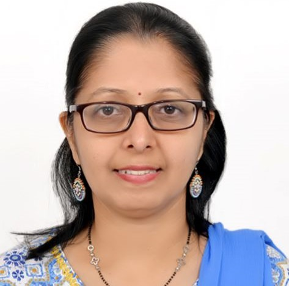

Dr. Reshma Sujal Sonar
Assistant Professor

Assistant Professor
Dr. Reshma Sonar integrates strong theoretical foundations with practical applications to create a dynamic and engaging learning environment. Her approach emphasizes experiential learning, problem-solving, and research-driven instruction, in emerging domains . She encourages students to become independent learners by involving them in hands-on projects, case studies, and collaborative research activities. She promotes interdisciplinary exploration and preparing students not only for academic success but also for meaningful professional careers.At MIT World Peace University, she actively aligns her academic and research activities with the institution’s vision of blending academic excellence with value-based education. She contributes by fostering a culture of innovation, research excellence, and ethical responsibility among students.Through her involvement in research publications, workshops, and academic initiatives, she supports the university’s mission of creating globally competent professionals who contribute positively to society. By integrating emerging technologies into the curriculum and encouraging interdisciplinary collaboration,she plays a vital role in strengthening MIT-WPU’s reputation as a center for excellence in technical education and holistic development.